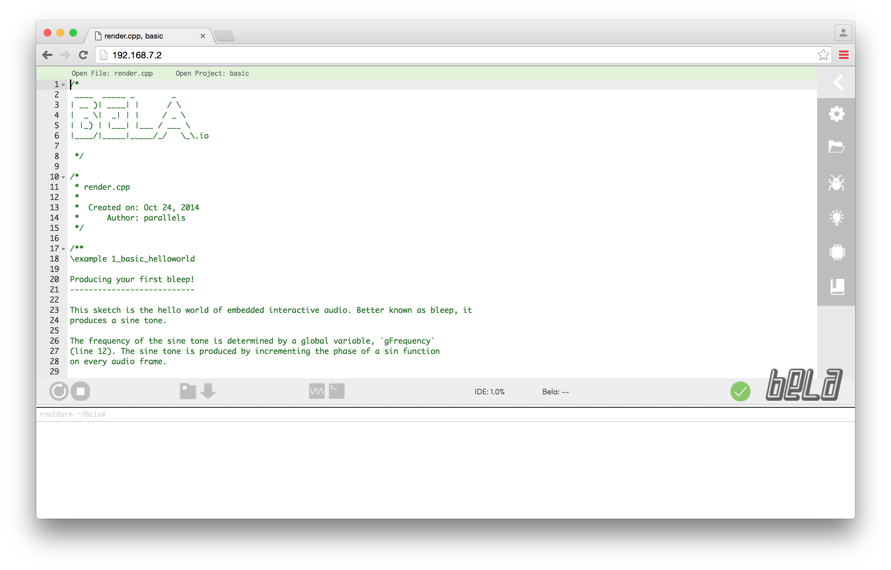
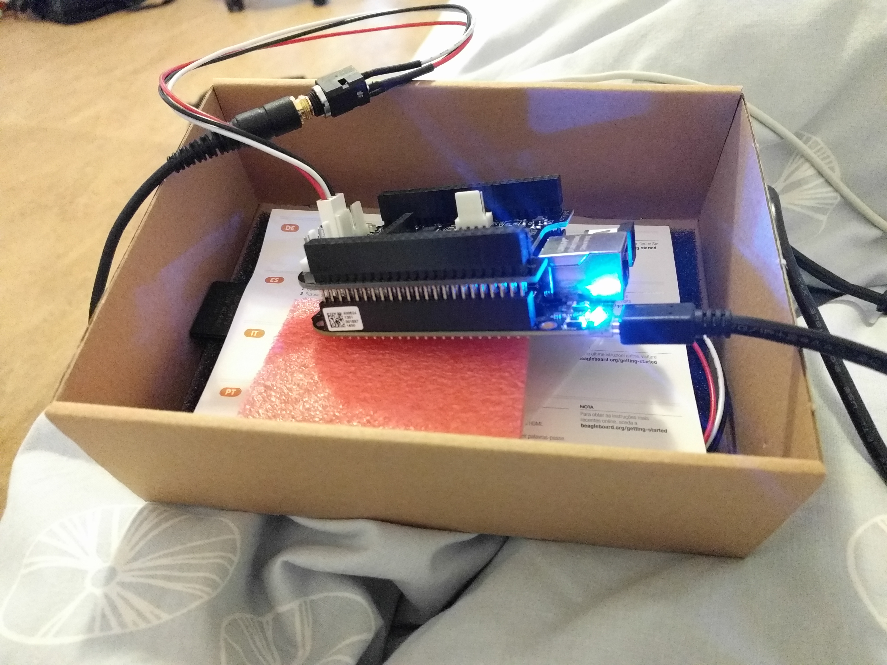

Bela is a Kickstarter backed expansion "cape" for the BeagleBone Black micro computer, a cheap and capable Linux device based on Texas Instruments technology. While the BeagleBone is a general purpose computing platform, Bela extends it with realtime audio processing capabilities.
But Bela offers more than just raw audio processing capabilities, it also bundles support for the Pure Data open modular audio synthesis environment (similar to Cycling '74's famed Max/MSP) as well as SuperCollider/Faust/Pyo although the latter ones are in the experimental stage.
As a result of the bundled audio environments, one can write audio programs to run in the Bela either in raw C++ or in the visual Pure Data environment (as well as using one of the experimental options such as SuperCollider).
My Plans for the Bela
I recently acquired the Bela starter kit, containing the Bela itself and a BeagleBone Black along with audio/USB cables and an SD card, basically all you need to get up and running. I got hold of a Bela since I wish to design an open source guitar pedal around it and at a later stage give workshops teaching people to build this pedal.
However, I anticipate that creating this pedal will be a lot of work since I lack experience both with creating guitar pedals or hardware in general and with audio signal processing. I'm not even sure whether to write the software in C++ or Pure Audio. Thankfully there's a lot of talented audio engineers of different stripes in Berlin (either within the hardware or the software realm), so I should have plenty of people to lend me advice at least :)
Writing C++ Programs for Bela
For writing programs in C++ and running them, the Bela conveniently supplies a browser based IDE, which you open by navigating to http://192.168.7.2/ (provided that the Bela is connected to your computer).

With the Bela IDE open, you can just start editing the default project or create a new one of your own or eventually open an existing one. Then, in order to test the program you can simply click the Run button. A really slick workflow, all in all.
Running Pure Data Patches on Bela
As part of getting to know the Bela, I've experimented with its Pure Data support. I found that you can run Pure Data patches via the IDE, but I personally prefer doing it via the command line instead as it's a more hands on and less cumbersome (IMO) approach.
Unfortunately, the Bela wiki is rather thin with info on running Pure Data patches from the command line, so I had to do a bit of research of my own, armed with some useful advice from their forum.
What I found out is that the command line tools for running Pure Data patches on Bela are the same as for C++ programs. The Bela software distribution has a number of scripts, among which some are for building and running projects (C++ programs or Pure Data patches) and stopping them.
So, first of all you must download the Bela source code to your computer. After doing so, within your favourite terminal, enter the resulting directory (in my case ~/Downloads/bela-master). Then all the required scripts should be in the scripts directory.
Then you can proceed to run a Pure Data patch on the Bela board, f.ex. examples/08-PureData/techno-world:
./scripts/build_project.sh --watch --force -b examples/08-PureData/techno-world
The --force option is to overwrite any previously loaded version of the techno-world project on the Bela, whereas the --watch option ensures that any local changes to the Pure Data patch are automatically uploaded and run on the Bela (very useful for making edits). The -b option means to run the script in the background, so that the watch mode (i.e., --watch option) can do its thing.
Correspondingly, in order to stop the running program, invoke the stop_running.sh script:
./scripts/stop_running.sh

The Project
For the specially interested, I've put up an open GitHub repository in order to coordinate work on the planned Bela based guitar pedal. Chime in if you want to help!